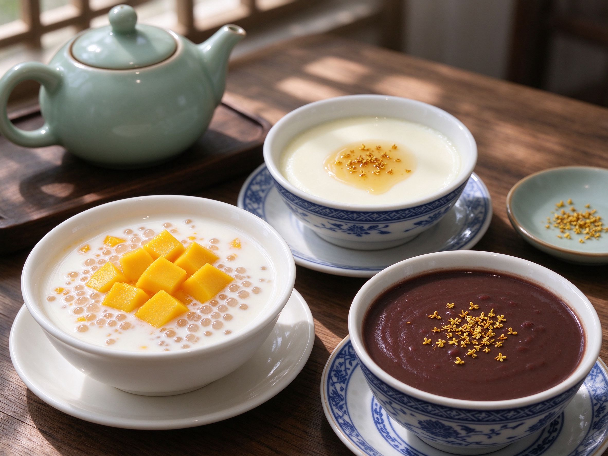

Chinese Desserts: 8 Sweet Treats You Can Make at Home
Forget the fortune cookie. The desserts Chinese people actually crave are gentle, silky, and surprisingly simple — think chilled mango sago, silken double-skin milk, and sweet red bean soup. Here are eight authentic treats you can make tonight with supermarket ingredients.
1. Mango Pomelo Sago (杨枝甘露)
The crown jewel of Cantonese dessert shops. Blend ripe mango with coconut milk, add cooked sago pearls, top with pomelo segments and more mango. Chill and serve — it's refreshing, creamy, and looks like sunshine in a bowl. The sago pearls take about 15 minutes to cook; the rest is assembly.
2. Double-Skin Milk (双皮奶)
A silky steamed custard from Shunde. The trick is the two skins: heat whole milk, let a skin form, then pour the milk out leaving the skin behind, mix with egg whites and sugar, pour back, and steam gently. The result is impossibly smooth. It's a weekend project, but an impressive one.
3. Red Bean Soup with Glutinous Rice Balls (红豆沙汤圆)
Sweet red bean soup is comfort in a bowl all year round. Simmer soaked adzuki beans until tender, blend partially, sweeten with rock sugar, and drop in soft glutinous rice balls (tangyuan). Warming, gently sweet, and endlessly customizable — try sesame-filled tangyuan for richness.
4. Osmanthus Cake (桂花糕)
A delicate, jelly-like dessert made from glutinous rice flour and osmanthus syrup. Steam it into layers, chill until set, and it turns translucent and fragrant. Osmanthus syrup is available online or in Asian grocers — a little goes a long way. This is the dessert that impresses guests.
5. Sesame Glutinous Rice Balls (驴打滚-style 麻薯)
Soft, chewy glutinous rice balls rolled in toasted black sesame and sugar — or the Beijing classic lü da gun: sweet bean paste rolled in rice cake and soybean flour. Both are no-bake, take minutes, and taste like nothing you can buy in a Western bakery.
6. Candied Hawthorn Skewers (糖葫芦)
Tanghulu — bright red hawthorn berries (or strawberries, grapes, mandarins) dipped in bubbling sugar syrup that hardens into a glass-like shell. It's the iconic street snack of northern China and a fun project with kids. You'll find it in our street food guide too.
7. Egg Tarts (蛋挞)
The Portuguese-style egg tart as Hong Kong perfected it: crisp, flaky pastry with a wobbly, caramel-spotted custard top. Store-bought puff pastry makes this shockingly easy — whisk eggs, milk, and sugar, pour into pastry-lined tins, and bake hot. Better than the bakery.
8. Sweet Rice with Dates (八宝饭)
Glutinous rice steamed with red dates, dried fruits, and nuts, pressed into a bowl, and unmolded with a drizzle of syrup. It's the classic celebration dessert for festivals and family dinners — make it for Lunar New Year. For more festive cooking, see our hot pot guide for the social meal to serve it after.
Chinese desserts are gentle on the palate and built on a few staple ingredients: glutinous rice, red beans, coconut milk, and rock sugar. Once you have those in the pantry, any of these is a half-hour project away.